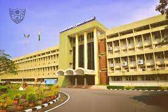
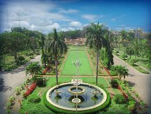
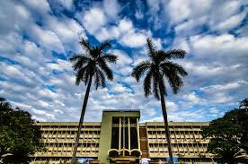

- The Department of Mathematics (today called, the Department of Mathematical and Computational Sciences) started along with the institute(1960). The Department of Mathematical and Computational Sciences, formerly known as Department of Mathematics, is one of the oldest departments of NITK. The department initially catered to the needs of the UG and PG Engineering Mathematics and subsequently, in 1988-89, introduced two PG programmes, namely, the Master of Computer Applications (MCA) and Master of Technology (M.Tech.) Computational Mathematics (CMA) (earlier named Master of Technology (M.Tech.) in Systems Analysis and Computer Applications).
- The PG programme, Master of Technology (M.Tech.) in Computational Mathematics (CMA) is replaced with Master of Technology (M.Tech.) in Computational and Data Science(CDS) since 2019.
- A new UG programme, Bachelor of Technology (B.Tech.) in Computational and Data Science(CDS) has commenced from the year 2022.
History


Areas
- MACS Department is known for its variety of courses in the areas of Algebra, Analysis, Applied Mathematics and Statistics. It not only caters to the needs of the other 13 departments of NITK but also offers its own master’s program in computer applications and computational mathematics. People from across the country come and enroll to the PhD program with faculties having expertise in the areas of Computational Systems, Nonlinear Analysis, Functional Analysis, Real Analysis, Number Theory & Cryptography, Numerical Analysis, Graph Theory, Optimization, Fluid Dynamics, Computer applications, Image processing and many more.
- The strength of department lies in the blend of 26 (19 Full Time+ 8 on contract) faculty members in not only pure and applied areas of mathematics and statistics but also in the area of computer science (hence the name Computational Sciences) ably supported by a Technical Officer and 6 non-teaching staff.
- Currently, 44 full-time research scholars and many part-time research scholars are working in frontier areas of mathematics, statistics and computer science.
Vision & Mission
- The vision of Department of Mathematical And Computational Sciences (MACS) is to develop and maintain overall academic excellence in the educational and research activities carried out.
- To impart the best quality education in Mathematical Fundamentals to all the Engineering Students of the institute.
- To produce high quality professionals to meet the needs of software industry through the PG programs. To engage in R&D work in the frontier areas of Mathematical and Computational Sciences.
